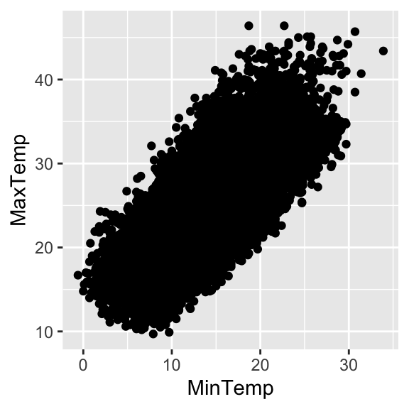
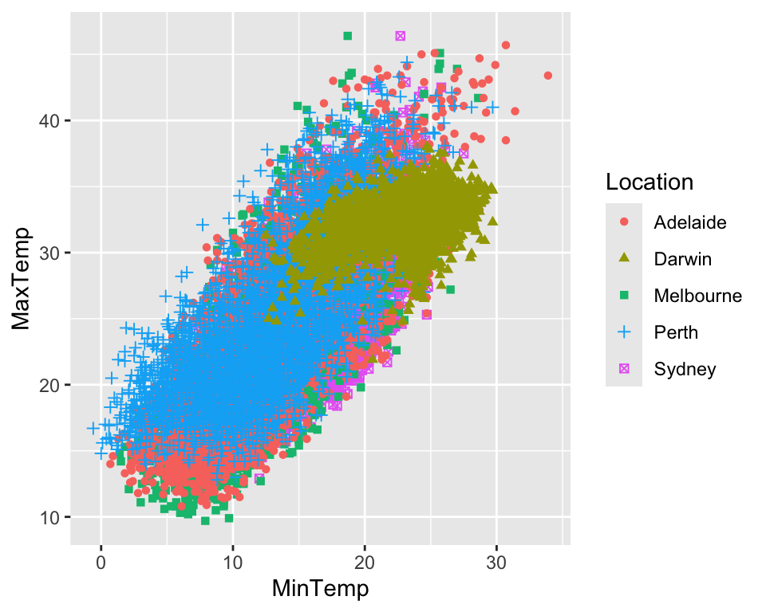
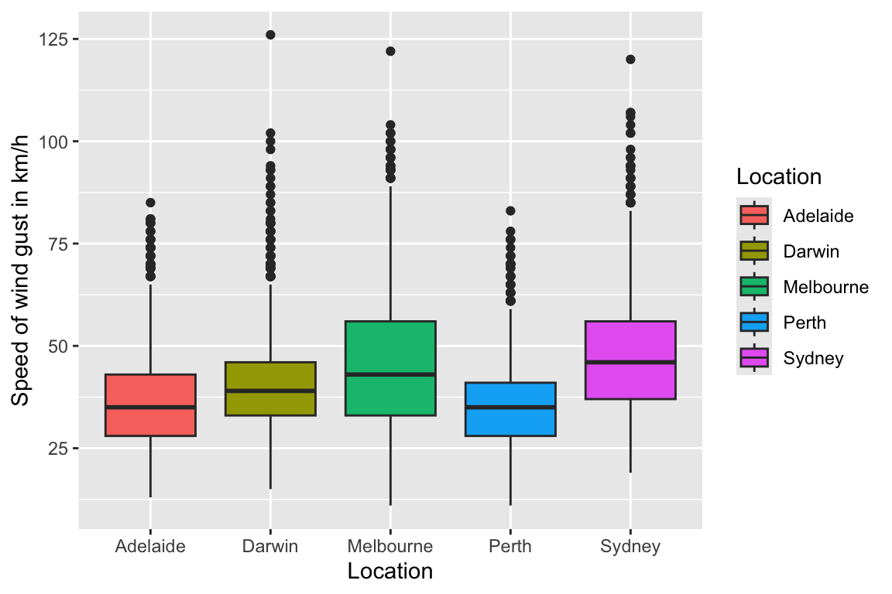
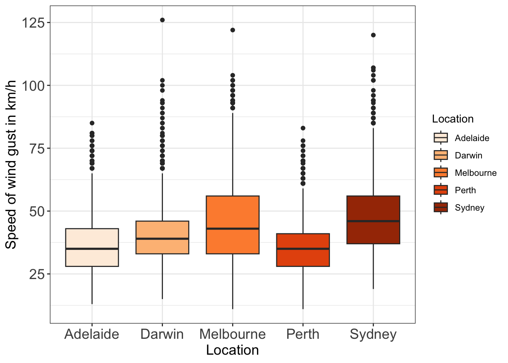
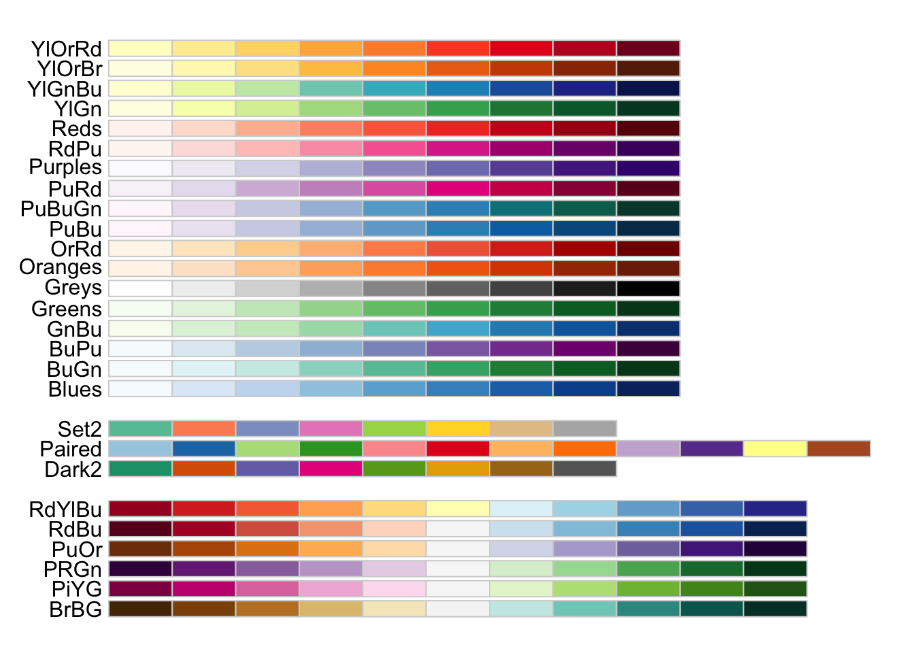
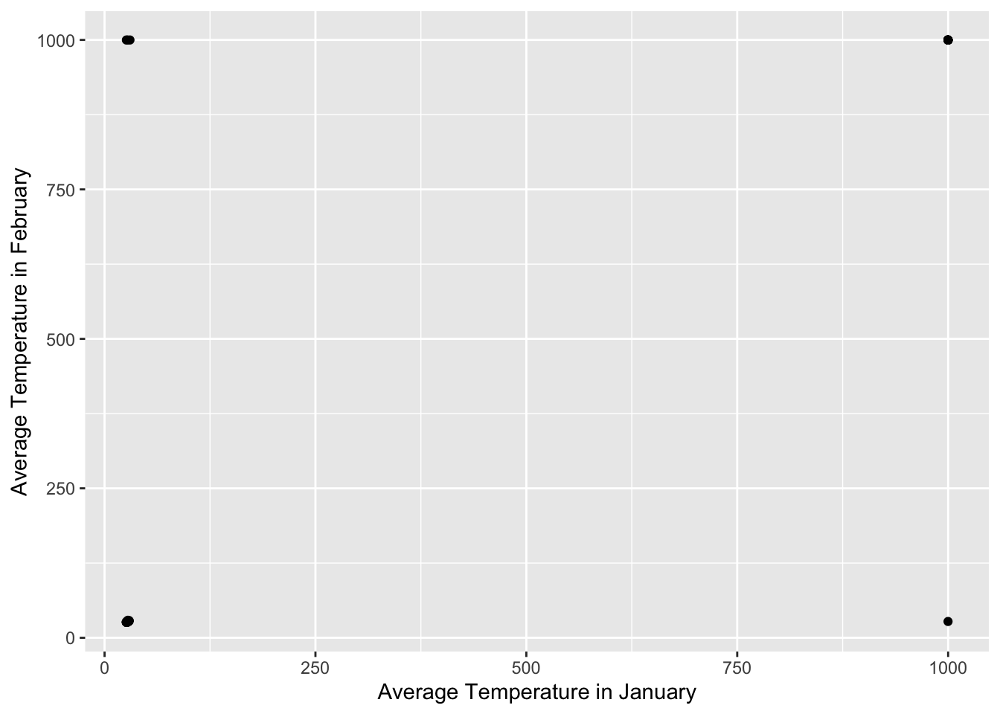

Data Visualization
In Chapter 1 we explored how to restructure a data set and extract summaries. In this chapter we will focus on data visualization, i.e., the creation and interpretation of plots that give us further insight into the data. Data visualization is not just important for data exploration, but also for presenting and communicating results.
There are two very important aspects we need to keep in mind:
Effective data visualization is more about clear communication than creating impressive plots. Your analysis may be excellent, but it won’t attract any attention if you cannot convey your results effectively.
Plots support our arguments and/or highlight the reason for our conclusion. As such we should interpret plots in the context of the research question and not just provide a plot as the answer.
We start by introducing a general framework for describing data graphics in Section 2.1. Sections 2.2 and 2.3 then demonstrate how to use the R package ggplot2 for data visualization. Finally, some further aspects are considered in Section 2.4.
Remark: The methods and techniques considered in this chapter cover general aspects of data visualization. Specific methods for illustrating text and spatial data are left to the next chapters.
Important: Data visualization is to some degree subjective, because there is often not just one way to visualize the data. However, you should follow the principles outlined in this chapter, and your conclusions need to be supported by your plot. Do not claim something that is not clearly visible in your output!
Background on data visualization
Before starting to create plots in R, we establish a framework to analyze plots in terms of four basic elements: visual cues, coordinate system, scale and context. Understanding these elements will help us with producing our own plots later.
Visual cues
Visual cues are graphical elements that draw the audience to the aspects we want them to focus on. The book “Data points: Visualization that means something” by Nathan Yau (link provided on Moodle) lists nine distinct visual cues to encode a category or quantity:
Position (quantity) - relation to other things
Length (quantity) - size in one dimension
Angle (quantity) - width of angle may, for instance, represent proportions (pie chart)
Direction (quantity) - slope of line
Shape (category) - which observations are in the same group
Area (quantity) - size in two dimensions
Volume (quantity) - size in three dimensions
Shade (quantity or category) - shade in comparison to others, or grouping
Colour (quantity or category) - colour in comparison to others, or grouping
Research has shown that our ability to perceive differences in magnitude descends in this order. One of many publications supporting this argument is “Graphical perception: Theory, experimentation, and application to the development of graphical methods.”, which you can find on Moodle.
Important: One crucial conclusion is that we should not rely too much on colour. Many people have colour deficiencies, which makes it very hard for them to distinguish certain colours. Consequently, before using colour, we should consider whether we could use shapes or shades instead.
Remark: In this course we focus on creating 2D graphics. While 3D plots and animations allow us to visualize a larger number of variables (and you may think they look more impressive), I would avoid using such plots except for a very limited number of cases. That’s because it is often difficult to see the exact positions of the points.
Example: Freediving world records
The data set “Freediving Records.csv” provides information on the progression of the world record in multiple disciplines for men and women. We will focus on the discipline “dynamic apnea with fins (DYN)” and visualize how the world records for men and women have progressed over time:
We can identify that the following visual cues have been used:
Shape and colour indicate whether the observations refer to the world record for men or women. Note, there is no issue with using multiple cues for the same information.
Length of line is used to convey two pieces of information: (i) the length of the line in horizontal direction indicates the time it took until the world record was broken, and (ii) the length of the line in vertical direction represents the magnitude of improvement.
Position is used to compare the world records for men and women (both lines are provided in the plot).
Shape is used to highlight the times when a world record was broken - this makes it is easy to count the number of times the record was broken. Without this visual cue, such information would be much harder to extract from the plot.
Coordinate system
Choosing a suitable coordinate system is critical to present the data accurately and in a meaningful way. The three most common coordinate systems used in data science are
- Cartesian:
-
Our familiar (\(x,y\))-rectangular coordinate system with two perpendicular axes.
- Polar:
-
Points are identified by their radius \(r\) (distance from the origin) and angle \(\theta\). A point (\(x,y\)) in Cartesian coordinates can be transformed to polar coordinates using the relationship [ (x,y) = (r, r), r=. ]
- Geographical:
-
In the chapter on spatial data analysis, we will work with points located across the earth, with their positions being defined by longitude and latitude.
There are two common cases when we may want to consider polar coordinates:
Pie charts
Variables which naturally lie on a circle, such as wind direction.
Tip: Since Position and Length are better visual cues than Angle, we should prefer Cartesian coordinates to polar coordinates. For instance, before using pie charts, consider whether the same information can be displayed effectively in a bar plot. However, we will see some examples where polar coordinates may be considered the better choice.
Example: Analysis of wind direction and speed
Hourly weather data was collected for Bela Vista, Brazil, for 2017 and 2018. Suppose we were asked to explore the distribution of wind direction and the relation between wind direction and speed of wind gusts.
To analyse the distribution of wind direction, we may create a histogram of the collected data. Let’s compare the histograms obtained for the Cartesian and polar coordinate systems (both display frequency):

Both plots, Cartesian (left) and polar (right), show that the wind predominately comes from a north-easterly direction. The right plot is a tick nicer, because it better handles that \(0^{\circ}=360^{\circ}\) in terms of wind direction, which is recorded as an angle.
Let’s turn to analyzing the relation between wind direction and speed of wind gusts. For this we create plots which map wind direction against the speed of the wind gusts, again using different coordinate systems:

What can we conclude about the relation between wind direction and speed of wind gusts?
I personally prefer the left plot because it indicates the difference in frequency of wind directions. The right plot (using polar coordinates) does not provide this information and it seems almost as if wind direction is uniformly distributed - so we would need the histogram in Figure @ref(fig:BVWind1) to correctly interpret the plot.
Scale and context
The concepts of scale and context refer to the choice of axes and the labeling of the data graphic respectively.
Scale
Scales allow us to translate values into visual cues by influencing, for instance, the distance (length) between points in a scatter plot. When choosing scales, we have to consider how the displayed distances translate into meaningful differences. Each coordinate axis can have its own scale, and we have three different choices:
Numerical: Numeric quantities, such as speed, age, etc., are commonly set on a linear, logarithmic or percentage scale.
Categorical: Categorical variables may have no ordering (political parties), or be ordinal (restaurant ratings). Ordinal variables differ from numeric quantities in that distances are unknown (or not meaningful). For instance, a first class degree is better than a 2.1, but what does this mean in terms of distance?
Time: While being a numeric quantity, time has some special properties: 1) it can be demarcated by year, month,.. and 2) it can be considered periodical. This second aspect can be highlighted using polar coordinates as seen in Section 2.1.4.
Context
Data graphics are provided to aid the reader/viewer with making meaningful comparisons. Context can be added in the form of titles, subtitles and axis labels that explain what is being shown, including the scales and units. It sometimes also helps to include reference points or lines. While we should avoid cluttering or providing excessive annotations, it is necessary to provide proper context.
Example: Relation between body and brain weight for mammals
The following two plots both illustrate the relation between body weight and brain weight for several mammals, but they use different scales:

We make two observations:
Linear scales were used in the left plot, while logarithmic scales were used in the right plot - this context was provided via the title.
The right plot is more informative as it shows a linear relationship between body and brain weight on logarithmic scale. This aspect is not clear in the left plot, and a viewer may focus on the three mammals with the highest brain weight as they appear to be quite different from the rest.
Analysis of Australian weather data using ggplot2
After outlining the different elements of a plot in the previous section, we now explore how we can create informative plots using the ggplot2 R package
We will introduce and utilize a wide range of plots to analyze historical weather data for five Australian cities. The data is provided on Moodle as “WeatherAustralia.csv” and we start by loading the data and looking at the first few entries:
AUS <- read.csv("data/weatheraustralia.csv" )
slice_head( AUS, n=5 ) Date Location MinTemp MaxTemp Rainfall WindGustSpeed
1 01/01/2009 Sydney 17.7 35.1 0 72
2 02/01/2009 Sydney 18.5 23.0 0 63
3 03/01/2009 Sydney 16.9 23.2 0 NA
4 04/01/2009 Sydney 18.7 27.1 0 65
5 05/01/2009 Sydney 20.2 31.6 0 63We see that the data provide daily information on minimum and maximum temperature, amount of rainfall and wind speed. Further, the data also include some missing values, as highlighted by the \(\mathrm{\texttt{NA}}\) entries.
In the following, we perform a data exploration which includes the creation and interpretation of multiple plots. At the end of the analysis, you will be familiar with the general functionality of the ggplot2 package. Further types of plots are listed on the ggplot2 cheat sheet (provided on Moodle). I would advise you to try creating some of them for practice, as they may be useful.
Important: In this section we focus on the different types of plots and visual cues. The other elements described in Section 2.1, coordinate system, scale and context, will be considered in Section 2.3.
Initializing a plot
The first step is to call the function ggplot() and we usually specify the following inputs:
The name of the data frame that contains the data we want to plot
The names of the variables which specify the axes. This is done using the function aes(), which refers to aesthetics (we will see this very often).
Suppose we want to create a scatter plot of minimum against maximum temperature for the five Australian cities. To initialize the plot, we specify
However, if we call PlotAUS in R, we will see a Cartesian coordinate system, but no points. This is because the coordinate system and visual cues are specified using separate functions in ggplot2. We will consider in the next subsection how to add points as an additional layer.
Remark: While it is important to use meaningful variable names when programming, I usually make an exception when using ggplot2. For instance, instead of PlotAUS, we could also call it g (for graphic) - I will later use this for brevity.
Scatter plots
The function geom_point() adds the points to the coordinate system created by ggplot(). Returning to the Australian weather data, we generate the scatter plot of daily minimum and maximum temperature using
PlotAUS + geom_point()
We observe a positive correlation between minimum and maximum daily temperature. However, this plot does not highlight that the data are coming from five different cities. In other words, the plot does not allow us to explore differences between the cities.
One possible solution is to use the visual cues shape and colour to indicate to which city a data point belongs. Specifically, we specify via aes() that the variable Location should be used to determine the shape and colour of the points created by the geom_point() function:
PlotAUS + geom_point( aes( shape=Location, color=Location ) )
Remark: If we wanted to use shade, we would have specified \(\mathrm{\texttt{aes( alpha=Location )}}\).
While our plot now makes clear that the data come from different cities, it is still very cluttered. This makes it hard to draw conclusions on differences between the five Australian cities. Luckily, there is a better option available, which we consider next.
Facets
Instead of creating a single plot which contains all points, it seems a nice idea to have a separate plot for each city. In other words, we want to split the data using the variable Location and create one plot per subset.
This type of plot is called a facet plot and it provides a simple and effective way to display the data for the separate levels of a categorical variable.
To create the facet plot, we use the function facet_wrap() and change the axes labels using the labs() function:
PlotAUS + geom_point() +
facet_wrap( ~Location ) +
labs( x="Minimum daily temperature", y="Maximum daily temperature" )
Our plot now reveals that Darwin is quite different from the other four cities in terms of the distribution of minimum and maximum daily temperature, in particular, in terms of the range of values.
What may be the reason for this difference? What else can we conclude?
Line plots
As for the river flow data in Section [1.1.4][Example: Loading and cleaning NRFA river flow data], we may want to explore how a variable changes over time for one of the five cities.
Scatter plots are often not the right choice for such a task, because it’s hard to see patterns in the data. Instead we create a line plot, where the length of the line connecting consecutive dates illustrates the magnitude of change in the values of the variable.
Let’s see how we can create a line plot for daily maximum temperature over time for Darwin. We start by converting the variable Date in the data frame to the correct type,
AUS <- AUS %>% mutate( Date = as_date( Date, format="%d/%m/%Y" ) )The next step is to extract the subset of observations for Darwin, which we store in a separate data frame called Darwin:
Darwin <- filter( AUS, Location == "Darwin" )A line plot is then created by using the geom_line() function, again by first defining the axes in the ggplot() function:

To create such a (time series) plot for all five cities, we again use facet_wrap(), and we use colour and shape (line type) to highlight the different cities:

The gap in the plot for Melbourne is due to the data being missing for this time period. One conclusion we draw from the plot is that the maximum daily temperature is less varied for Darwin than the other cities, which exhibit a clear seasonal pattern.
Remark 1: To draw steps as in Section 2.1.2, we would use geom_step() instead of geom_line().
Remark 2: The use of colour and shape in Figure @ref(fig:DateTempFacet) is not really necessary. We just did it do illustrate that visual cues can be used together with facet_wrap().
Histograms and density plots
We now want to investigate the distribution of a single variable, such as the speed of the wind gusts in one (or more) of the cities. Histograms and density plots are useful in such cases. You already created histograms in Year 1 Probability & Statistics and we analyzed such a plot in Section 2.1.4. We start by producing a histogram using ggplot2 and then introduce the density plot in more detail.
Histograms
The ggplot2 package provides the function geom_histogram() to create a histogram. As for the hist() function you used before, we have to set a suitable number of bins, and this is done using the bins option inside the geom_histogram() function.
Let’s return to the data for Darwin. To create a histogram for wind speed gusts, we have to call ggplot() and geom_histogram(), but we now only specify the x-axis:
ggplot( Darwin, aes( x=WindGustSpeed ) ) + geom_histogram( bins=20 ) +
labs( x="Speed of wind gust in km/h", y="Count" )
What could be a sensible distribution for the speed of wind gusts, based on the histogram?
Density plots
A density plot is pretty much a smoothed version of the histogram. Given data \(x_1,\ldots,x_n\), we define the estimate \(\hat{f}_X(\cdot)\) for the probability density function \(f_X(\cdot)\) of the random variable \(X\) as \[\begin{equation} \hat{f}_X(x) = \frac{1}{nh}\sum_{i=1}^{n} K\left(\frac{x-x_i}{h}\right), \qquad x\in\mathbb{R}, (\#eq:KDE) \end{equation}\] where \(K(\cdot)\) is termed the kernel and \(h\) is called the bandwidth. The kernel is a non-negative probability density function. One common choice is to set \(K(\cdot)\) as the density of the standard normal distribution, with [ X(x) = {i=1}^{n}{-}. ]
In principle, the bandwidth \(h\) has to be set by us. If \(h\) is too small, the density plot will look very jittered, while a too large \(h\) will obscure the underlying data structure. Consequently, care should be taken when setting the bandwidth.
Remark 1: When generating density plots in R, a suitable value for \(h\) is often provided automatically. However, we sometimes have to set the bandwidth manually.
Remark 2: It is usually sufficient to provide either the histogram or the density plot, because they visualize similar aspects of the data. Note, the histogram should be used for discrete data.
In ggplot2, geom_density() is used to create density plots and, as for geom_histogram(), we only specify the x-axis. Let’s use this type of plot to compare the distributions of the speed of wind gusts for Darwin and Adelaide. To aid the comparison, we place the estimates for the two cities in the same plot:

The two estimated curves indicate that Adelaide and Darwin differ in the distribution of wind gust speeds. For instance, Adelaide observes wind gust speeds below 30 km/h more often than Darwin.
Remark 1: The option \(\mathrm{\texttt{size=1.2}}\) in geom_density() increases the thickness of the line in the plot - you can set size to any positive value, and higher values will give thicker lines. If you wanted to specify the bandwidth \(h\) in @ref(eq:KDE), you have the option \(\mathrm{\texttt{bw=..}}\).
Remark 2: Density plots can sometimes be misleading because they are a smoothed version of the histogram. Although Adelaide and Darwin appear to have a similar density in Figure @ref(fig:DAWind) when it comes to high wind speeds, the highest value for Adelaide is 86 km/h, while it is 126 km/h for Darwin. Consequently, we should be cautious when drawing conclusions about the distribution tails based on density plots.
Box and violin plots
Box plots and violin plots are useful for comparing a number of distributions. For instance, we may want to compare the distributions of wind gust speed for the five Australian cities. While we could produce a separate density plot for each city, box and violin plots tend to be a better choice.
The two types of plot differ in terms of the information they provide:
Box plots visualize the median, interquartile range (25% and 75% quantile) and outliers.
Violin plots visualize the density estimate \(\hat{f}_X(\cdot)\) as defined in Equation @ref(eq:KDE).
Box plots
In ggplot2, box plots are created using the geom_boxplot() function. Let’s use this type of plot to compare the wind gust speeds across the five cities. We set the x-axis to the categorical variable Location, and the y-axis as speed of wind gust:
ggplot( AUS, aes( x=Location, y=WindGustSpeed ) ) +
geom_boxplot( aes( fill=Location ) ) +
labs( y="Speed of wind gust in km/h" )
We can extract a few details about the distributions of the speed of wind gusts for the five cities. For instance, when considering the median, Melbourne and Sydney record the strongest wind gusts, while Adelaide and Perth record the lowest wind gust speeds.
Remark 1: The option \(\mathrm{\texttt{fill=Location}}\) gives each box plot a different colour.
Remark 2: If we wanted a single box plot for a variable, we would only specify one of the axes.
Violin plots
To conclude our analysis, we compare the distribution of daily wind gust speeds across the five Australian cities using violin plots. This type of plot is generated using the geom_violin() function, and the syntax is the same as for geom_boxplot(). We make two additions compared to Figure @ref(fig:Box) though:
A plot title is set using the labs() function.
It’s good practice to order box and violin plots, for instance, based on the median of the different subgroups. This is achieved using the reorder() function.
Putting everything together, the five violin plots are generated using
ggplot( AUS, aes( x=reorder(Location, WindGustSpeed, median, na.rm=TRUE),
y=WindGustSpeed ) ) + geom_violin() +
labs( x="Location", y="Wind gust speed in mph",
title="Wind gust speed across five Australian cities" )
Remark: The four components within reorder() should be read as follows: (i) We want to reorder the values in Location, (ii) which should be based on the variable WindGustSpeed, (iii) the value to be used for the reordering is the median and (iv) ignore any missing values when calculating the median.
By ordering the violin plots, we can directly draw the conclusion that Adelaide has the lowest median wind gust speed, while Sydney has the highest. There are also other conclusions that are worth pointing out, such as the differences in terms of highest observed wind gust speeds.
Creating advanced plots with ggplot2
In the previous section we generated plots using the structure [ + _. ] and this allowed us to create several type of plots and to use multiple visual cues. The following table lists the types of plots we explored so far (plus the functions for generating bar plots):
| Type of plot | \(\mathrm{\texttt{<GEOM}}\_\mathrm{\texttt{FUNCTION>}}\) | Visual cues we may use |
|---|---|---|
| Scatter plot | geom_point | shape, shade, colour, size |
| Line plot | geom_line | shade, colour, linetype, size |
| geom_step | shade, colour, linetype, size | |
| Bar plot | geom_bar | shade, colour, size |
| geom_col | shade, colour, size | |
| Histogram | geom_histogram | shade, colour, linetype |
| Box plot | geom_boxplot | shade, colour |
| Density plot | geom_density | shade, colour, linetype |
| Violin plot | geom_violin | shade, colour, linetype |
We also covered a few additional aspects, such as using facet_wrap() to create facets and labs() to specify the axes labels. In this section we consider the remaining plot elements described in Section 2.1:
Changing the coordinate system to polar coordinates
Changing the scale of the x-axis (y-axis)
We will also explore how to change the font size of the labels and the colour scheme in our plot. This will give us a lot of flexibility to visualize data.
Changing the coordinate system
We saw in Section 2.2 that ggplot() uses the Cartesian coordinate system by default. In Section 2.1.3 we highlighted that we sometimes want to use polar coordinates, for instance, when displaying wind direction. The coord_polar() function in ggplot2 allows us to switch from Cartesian to polar coordinates. Let’s consider two cases where such a transformation may be useful.
Visualizing direction
In Figures @ref(fig:BVWind1) and @ref(fig:BVWind2) we used plots with polar coordinates to explore wind direction and speed for Bela Vista, Brazil. We can reproduce these plots in ggplot2:
library(patchwork) # required to place plots next to each other
wind_BV <- read.csv("data/wind_bela_vista.csv" )
g1 <- ggplot( wind_BV, aes( x=Wind.Direction ) ) +
geom_histogram( bins = 120 ) + coord_polar() +
labs( x="Wind Direction" )
g2 <- ggplot( wind_BV, aes( x=Wind.Direction, y=Gust.Speed ) ) +
geom_point() + geom_smooth() + coord_polar( theta="x" ) +
labs( x="Wind Direction", y="Wind gust in m/s" )
g1 + g2`geom_smooth()` using method = 'gam' and formula = 'y ~ s(x, bs = "cs")'
The option \(\mathrm{\texttt{theta="x"}}\) in coord_polar() specifies that the angle should be defined by the x-axis. We do not have to do anything else - ggplot2 is doing all the calculations for us.
Remark 1: The R package patchwork makes it easy to place two graphics created by ggplot2 next to each other by using the + sign. There are more options available - have a look at the documentation for the package.
Remark 2: The example also shows that we can use multiple geom_..() functions in the same plot. Here, we used geom_smooth() to add a line representing the average wind speed in each direction to the plot. However, we note that the line does not match up at \(0^{\circ}\). This is not particularly elegant, but there is not a very easy fix to this.
Are there any other plots we should create to explore the distribution of wind direction and speed of wind gusts at Bela Vista, Brazil?
Pie Charts
In a pie chart we use the size of the angle as a visual cue and such a plot may be useful to visualize proportions. The following R code illustrates how to create a pie chart using ggplot2:
df <- data.frame( "prob" = c(0.3,0.4,0.3), "group" = c("A","B","C") )
ggplot( df, aes( x="", y=prob, fill=group ) ) +
geom_col() + coord_polar( theta="y" ) + labs( x="", y="" )
The code first creates a plot on Cartesian coordinates - a stacked bar plot in this case - which is then converted to polar coordinates. To see this, you may want to have a look at the plot you obtain when removing coord_polar() from the code above.
Changing scales
We saw in Section 2.1.5 that changing the scale of one (or more) variables in a plot can help with the data analysis. In applications, transformations are often used to reduce the influence of extreme outliers in the plot. For instance, by considering logarithmic scales in Section 2.1.5, the three mammals with very high brain weight in the data appeared less extreme, and we were instead able to see the possible linear relationship on logarithmic scale between brain and body weight.
When using ggplot(), a linear scale is used by default. The function coord_trans() enables us to change the scale of the x-axis or y-axis. The most common transformations are logarithmic (\(\mathrm{\texttt{x="log"}}\) or \(\mathrm{\texttt{x="log10"}}\)) and square root (\(\mathrm{\texttt{x="sqrt"}}\)).
Example: Analysis of Facebook Data
The data in “Facebook.csv” contains data related to messages posted by a few Olympic athletes. We want to explore the relation between number of likes (received for individual posts) and the number of followers of the athlete. Let’s produce two plots, one with linear scales and one with logarithmic scales:
Facebook <- read.csv("data/facebook.csv", header=TRUE )
g <- ggplot( Facebook, aes( x=follow, y=postlikes ) ) +
labs( x="Number of Followers", y="Number of likes" )
g1 <- g + geom_point()
g2 <- g + geom_point() + coord_trans( x="log", y="log" )
g1 + g2
We see that the two plots provide quite different information: The graphic with log-transformed scales shows a possible linear relationship between log(number of followers) and log(number of likes), which is not visible when considering the plot with linear scales.
Remark: If you want to use another transformation than logarithmic or square root, you can specify it within ggplot. For instance, we could use
You have to be aware that the numbers along the axes differ in this case, and you have to change the axis labels to highlight that the values are on logarithmic scale.
Changing font size
When we produce plots, we may find that, for instance, the axis labels are too small. Further, we may want to change the margins around our graphics. The theme() function allows us to do all this (and much more).
In Figure @ref(fig:Facebook) the axis labels are quite small and it may be nice to have a little bit of a gap between the plots. Let’s use the theme() function to achieve this. To visualize the difference, we only alter the setup of the second plot.
g2 <- g2 +
theme( plot.margin=margin( t=0, l=100, b=0, r=0 ),
axis.title=element_text(size=16),
axis.text=element_text(size=14) )
g1 + g2
We see that the gap between the plots has widened, and that the font size of the axis labels and numbers in the right plot have increased. Font size in ggplot2 is specified via element_text(size=..):
Font size of the title is changed with theme( title=element_text(size=..) )
Font size of the axis labels is changed with theme( axis.title=element_text(size=..) )
Font size in the legend can be changed with theme( legend.title=element_text(size=..) ) and theme( legend.text=element_text(size=..) )
Remark: Making sure that labels are provided in a suitable font size is important. The gap between the plots is more of a personal preference.
Changing colour schemes
So far we used the default colour scheme provided by ggplot2. There are situations, however, where we may want to change the colour scheme. One easy way to achieve this is by using the functions scale_filler_brewer() and scale_colour_brewer() in ggplot2 - which of these to use depends on whether you specified fill=.. or colour=.. in aes().
Example: Let’s reproduce the box plots in Section 2.2.6, but with an orange colour scheme
AUS <- read.csv("data/weatheraustralia.csv" )
ggplot( AUS, aes( x=Location,y=WindGustSpeed ) ) +
geom_boxplot( aes(fill=Location) ) +
labs( y="Speed of wind gust in km/h" ) +
scale_fill_brewer( palette="Oranges" ) + theme_bw() +
theme( axis.title=element_text(size=14), axis.text=element_text(size=14) )
Remark: We used theme_bw() to change the background colour from grey to white.
There are multiple colour blind friendly patterns available for scale_filler_brewer() and scale_colour_brewer(), which you can view using
library( RColorBrewer )
display.brewer.all( colorblindFriendly = TRUE )
Note, the colour schemes above are useful when applied to visualize a discrete variable with a small number of different values, such as the five Australian cities. We will see in Chapter [4][Spatial Data Analysis] how to change the colour scheme when visualizing a continuous random variable.
Changing the data structure
Generally speaking, ggplot2 plots different columns in a data frame against each other, and each row is considered as a single observation. However, in practice the data structure may not be as required.
The functions pivot_wider() and pivot_longer() in the tidyr package may provide one way to address this. Before considering an example, let’s load the tidyr package:
Temperature in Manaus - Comparison of months
The file “Manaus Temperature.csv” provides the average temperature for each month in the years 1910-2019 for the city of Manaus, Brazil. Let’s load and investigate the data:
Manaus_raw <- read.csv("data/manaus_temperature.csv" )
slice_head( Manaus_raw, n=4 ) YEAR JAN FEB MAR APR MAY JUN JUL AUG SEP OCT NOV DEC
1 1910 27.3 27.0 26.5 26.2 27.2 27.5 27.7 28.0 29.0 28.3 28.3 27.8
2 1911 27.0 27.4 27.4 27.3 27.2 27.0 27.4 28.3 29.0 29.1 28.8 28.3
3 1912 29.0 28.8 28.3 28.0 27.3 28.1 27.4 28.8 28.3 29.3 29.2 27.5
4 1913 27.2 28.1 27.3 27.6 27.0 27.6 27.7 27.7 28.7 28.7 28.8 28.5We see that each row corresponds to one year of data. If we wanted to compare two months with each other, the data structure would be ideal for us to create a scatter plot with ggplot2. Let’s compare the temperatures for January and February:
ggplot( Manaus_raw, aes( "x"=JAN, "y"=FEB ) ) + geom_point() +
labs( x="Average Temperature in January", y="Average Temperature in February")
The plot looks very odd and some of the data points have a value of \(999.9\). Since such high temperatures are highly unlikely, we conclude that the value \(999.9\) is used to indicate missing data. Let’s replace these values for January and February by \(\mathrm{\texttt{NA}}\). We can do this using case_when() or by using the na_if() function in dplyr:
Manaus <- Manaus_raw %>%
mutate( JAN = na_if( JAN, 999.9 ), FEB = na_if( FEB, 999.9 ) )We can now create the plot again
ggplot( Manaus, aes( "x"=JAN, "y"=FEB ) ) + geom_point() +
labs( x="Average Temperature in January", y="Average Temperature in February") +
theme( axis.title=element_text(size=16), axis.text=element_text(size=14) )Warning: Removed 16 rows containing missing values or values outside the scale range
(`geom_point()`).
We see that there is a positive correlation between the average monthly temperatures for Sao Paulo and Rio de Janeiro.
Temperature in Manaus - Temperatures across time
Let’s assume that we also wanted to explore average temperature over time. In this case, a line plot would be a good choice. However, the data frame provides no single column which contains the monthly average temperatures.
The function pivot_longer() allows us to change the structure of the data frame by combining the columns JAN to DEC into a single column
Manaus_long <- Manaus_raw %>%
pivot_longer( cols=JAN:DEC, names_to="Month" ) %>%
rename( Temperature = value )
slice_head( Manaus_long, n=3 )# A tibble: 3 × 3
YEAR Month Temperature
<int> <chr> <dbl>
1 1910 JAN 27.3
2 1910 FEB 27
3 1910 MAR 26.5So we have converted the original table to a narrower but substantially longer table with 3 columns; the pivot_longer() function by default stores the observed monthly averages in a column named value, which we renamed to Temperature.
If we wanted to reverse back to the original format, we would use the function pivot_wider(),
Manaus_wide <- Manaus_long %>%
pivot_wider( names_from=Month, values_from=Temperature )Each row in Manaus_long now corresponds to one month instead of one year. The one challenge that remains is to convert the variables YEAR and MONTH into a single variable that represents the date. There is unfortunately no easy way, but the following code does the job
## Convert abbreviation for month into number
Manaus_long <-
Manaus_long %>%
mutate( Month = case_when(
Month == "JAN" ~ "01", Month == "FEB" ~ "02", Month == "MAR" ~ "03",
Month == "APR" ~ "04", Month == "MAY" ~ "05", Month == "JUN" ~ "06",
Month == "JUL" ~ "07", Month == "AUG" ~ "08", Month == "SEP" ~ "09",
Month == "OCT" ~ "10", Month == "NOV" ~ "11", Month == "DEC" ~ "12"
)
)
## Combine year and month and convert to date
Manaus_long <- Manaus_long %>%
mutate( Date = paste( Manaus_long$YEAR, Manaus_long$Month, sep="-" ) ) %>%
mutate( Date = ym( Date ) )Finally, we can create our line plot. We have to keep in mind that we still have entries of value 999.9 which we do not want to plot. We again replace values of 999.9 with \(\mathrm{\texttt{NA}}\):
Manaus_long %>%
mutate( Temperature = na_if( Temperature, 999.9 ) ) %>%
ggplot( aes("x"=Date, "y"=Temperature) ) +
geom_line() + geom_smooth() +
labs( y="Average Monthly Temperature") + theme_bw() +
theme( axis.title=element_text(size=16), axis.text=element_text(size=14) )`geom_smooth()` using method = 'gam' and formula = 'y ~ s(x, bs = "cs")'
The plot indicates an increase in the average monthly temperature from about 27.5 to 29 degree Celsius over the time period.
Remark: The last piece of code shows that we can use the pipe together with the functions from ggplot2.
Summary
We covered some of the principles regarding data visualization:
When designing your data graphic, ensure that the main message/aspect is clearly visible and provide an interpretation of your plot. Avoid presenting plots that are not focused towards answering the research question.
The important types of graphics we use for data visualization and exploration are line plot, scatter plot, bar plot, histogram, density plot, box plot and violin plot.
-
Graphics can be discussed in terms of four elements:
Visual cues
Coordinate system
Scale
Context
The ggplot2 R package provides a wide range of tools for creating data graphics from a given data frame. This includes changing the coordinate system, the scale and selecting a wide range of types of graphics.
For complex data sets it is often useful to use facets and a wide range of visual cues. This may improve accessibility for the reader.
In practice we often have to restructure the data using the dplyr and tidyr packages before creating the data graphic.